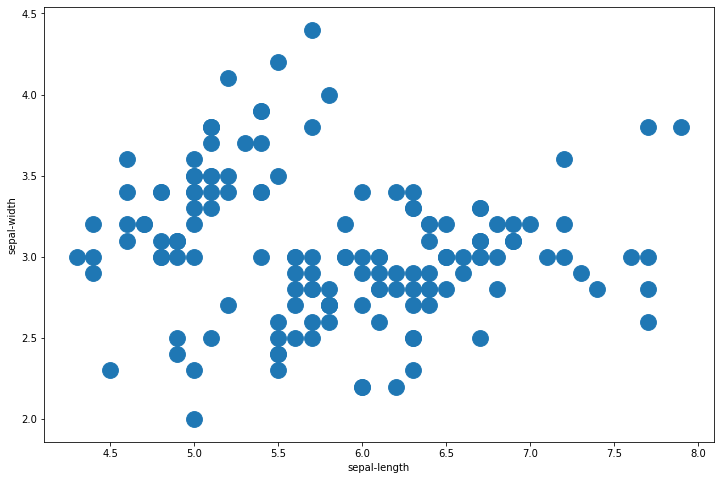
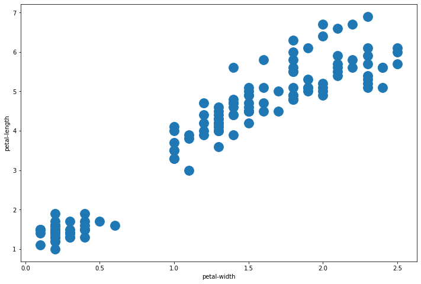
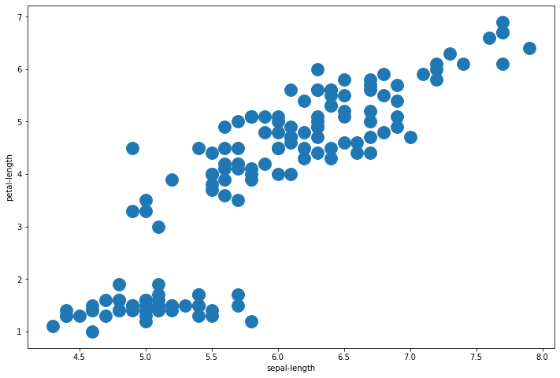
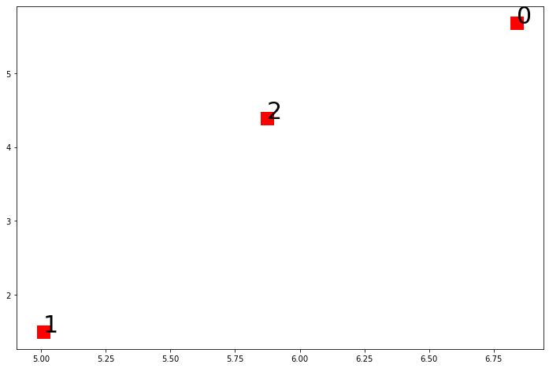
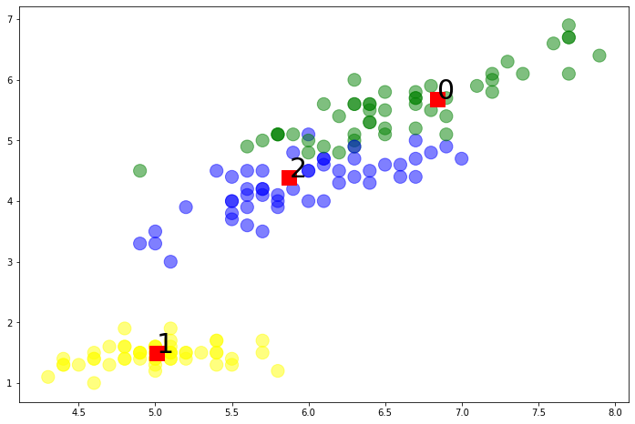
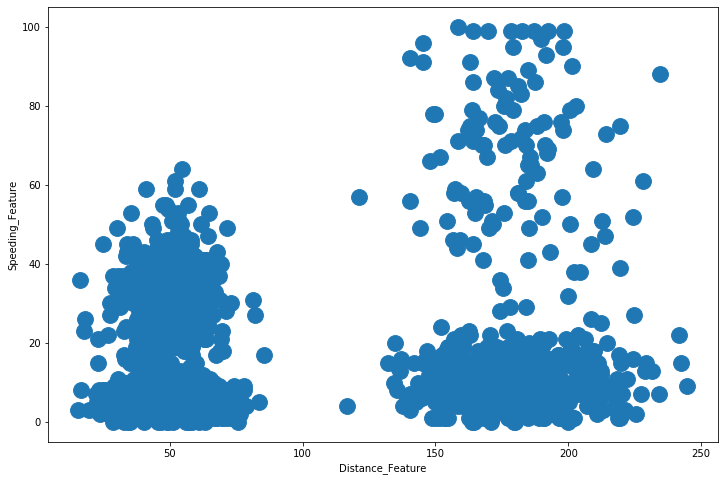

Clustering con Scikit Learn
Por Jose R. Zapata
Importar librerias
import pandas as pd
import matplotlib
import matplotlib.pyplot as plt
import numpy as np
from sklearn import metrics
from sklearn.cluster import KMeans
import warnings
warnings.filterwarnings("ignore")
Informacion de los datos
iris_df = pd.read_csv('datasets/iris.csv',
skiprows=1,
names = ['sepal-length',
'sepal-width',
'petal-length',
'petal-width',
'class'])
iris_df.head()
| sepal-length | sepal-width | petal-length | petal-width | class | |
|---|---|---|---|---|---|
| 0 | 5.1 | 3.5 | 1.4 | 0.2 | Iris-setosa |
| 1 | 4.9 | 3.0 | 1.4 | 0.2 | Iris-setosa |
| 2 | 4.7 | 3.2 | 1.3 | 0.2 | Iris-setosa |
| 3 | 4.6 | 3.1 | 1.5 | 0.2 | Iris-setosa |
| 4 | 5.0 | 3.6 | 1.4 | 0.2 | Iris-setosa |
Mezclar la base de datos
iris_df = iris_df.sample(frac=1).reset_index(drop=True)
iris_df.head()
| sepal-length | sepal-width | petal-length | petal-width | class | |
|---|---|---|---|---|---|
| 0 | 6.5 | 2.8 | 4.6 | 1.5 | Iris-versicolor |
| 1 | 6.8 | 3.2 | 5.9 | 2.3 | Iris-virginica |
| 2 | 5.4 | 3.9 | 1.3 | 0.4 | Iris-setosa |
| 3 | 6.7 | 3.0 | 5.0 | 1.7 | Iris-versicolor |
| 4 | 7.2 | 3.2 | 6.0 | 1.8 | Iris-virginica |
iris_df.shape
(150, 5)
iris_df[iris_df.isnull().any(axis=1)]
| sepal-length | sepal-width | petal-length | petal-width | class |
|---|
iris_df.describe()
| sepal-length | sepal-width | petal-length | petal-width | |
|---|---|---|---|---|
| count | 150.000000 | 150.000000 | 150.000000 | 150.000000 |
| mean | 5.843333 | 3.054000 | 3.758667 | 1.198667 |
| std | 0.828066 | 0.433594 | 1.764420 | 0.763161 |
| min | 4.300000 | 2.000000 | 1.000000 | 0.100000 |
| 25% | 5.100000 | 2.800000 | 1.600000 | 0.300000 |
| 50% | 5.800000 | 3.000000 | 4.350000 | 1.300000 |
| 75% | 6.400000 | 3.300000 | 5.100000 | 1.800000 |
| max | 7.900000 | 4.400000 | 6.900000 | 2.500000 |
iris_df['class'].unique()
array(['Iris-versicolor', 'Iris-virginica', 'Iris-setosa'], dtype=object)
Preprocesamiento de datos
from sklearn import preprocessing
label_encoding = preprocessing.LabelEncoder()
iris_df['class'] = label_encoding.fit_transform(iris_df['class'].astype(str))
iris_df.head()
| sepal-length | sepal-width | petal-length | petal-width | class | |
|---|---|---|---|---|---|
| 0 | 6.5 | 2.8 | 4.6 | 1.5 | 1 |
| 1 | 6.8 | 3.2 | 5.9 | 2.3 | 2 |
| 2 | 5.4 | 3.9 | 1.3 | 0.4 | 0 |
| 3 | 6.7 | 3.0 | 5.0 | 1.7 | 1 |
| 4 | 7.2 | 3.2 | 6.0 | 1.8 | 2 |
iris_df.describe()
| sepal-length | sepal-width | petal-length | petal-width | class | |
|---|---|---|---|---|---|
| count | 150.000000 | 150.000000 | 150.000000 | 150.000000 | 150.000000 |
| mean | 5.843333 | 3.054000 | 3.758667 | 1.198667 | 1.000000 |
| std | 0.828066 | 0.433594 | 1.764420 | 0.763161 | 0.819232 |
| min | 4.300000 | 2.000000 | 1.000000 | 0.100000 | 0.000000 |
| 25% | 5.100000 | 2.800000 | 1.600000 | 0.300000 | 0.000000 |
| 50% | 5.800000 | 3.000000 | 4.350000 | 1.300000 | 1.000000 |
| 75% | 6.400000 | 3.300000 | 5.100000 | 1.800000 | 2.000000 |
| max | 7.900000 | 4.400000 | 6.900000 | 2.500000 | 2.000000 |
Analisis Univariable
Se debe hacer un analisis de cada una de las variables y describir sus caracteristicas
Analisis Bivariable
Scatter plot
fig, ax = plt.subplots(figsize=(12, 8))
plt.scatter(iris_df['sepal-length'], iris_df['sepal-width'], s=250)
plt.xlabel('sepal-length')
plt.ylabel('sepal-width')
plt.show()

fig, ax = plt.subplots(figsize=(12, 8))
plt.scatter(iris_df['petal-width'], iris_df['petal-length'], s=250)
plt.xlabel('petal-width')
plt.ylabel('petal-length')
plt.show()

fig, ax = plt.subplots(figsize=(12, 8))
plt.scatter(iris_df['sepal-length'], iris_df['petal-length'], s=250)
plt.xlabel('sepal-length')
plt.ylabel('petal-length')
plt.show()

KMeans SIMPLE
iris_2D = iris_df[['sepal-length', 'petal-length']]
iris_2D.sample(5)
| sepal-length | petal-length | |
|---|---|---|
| 133 | 6.4 | 5.3 |
| 124 | 5.6 | 3.6 |
| 111 | 5.8 | 5.1 |
| 75 | 4.7 | 1.3 |
| 31 | 6.7 | 5.2 |
iris_2D.shape
(150, 2)
iris_2D = np.array(iris_2D)
kmeans_model_2D = KMeans(n_clusters=3, max_iter=1000).fit(iris_2D)
kmeans_model_2D.labels_
array([2, 0, 1, 0, 0, 2, 0, 1, 2, 0, 2, 1, 1, 2, 1, 1, 0, 2, 1, 2, 2, 0,
2, 2, 2, 1, 0, 2, 1, 0, 1, 0, 1, 2, 2, 1, 0, 2, 1, 0, 2, 1, 0, 2,
0, 2, 1, 1, 2, 1, 1, 0, 0, 0, 2, 1, 2, 0, 1, 1, 1, 2, 2, 1, 2, 0,
2, 0, 1, 0, 2, 2, 1, 2, 2, 1, 0, 0, 1, 0, 1, 0, 2, 2, 0, 1, 2, 2,
1, 2, 0, 2, 1, 0, 1, 1, 1, 2, 2, 1, 0, 2, 2, 0, 2, 1, 0, 1, 2, 2,
1, 2, 1, 1, 1, 2, 0, 1, 2, 0, 1, 1, 1, 2, 2, 2, 2, 1, 0, 1, 2, 2,
2, 0, 0, 2, 2, 0, 2, 0, 1, 2, 1, 0, 1, 2, 0, 0, 1, 2], dtype=int32)
centroids_2D = kmeans_model_2D.cluster_centers_
centroids_2D
array([[6.83902439, 5.67804878],
[5.00784314, 1.49411765],
[5.87413793, 4.39310345]])
fig, ax = plt.subplots(figsize=(12, 8))
plt.scatter(centroids_2D[:,0], centroids_2D[:,1], c='r', s=250, marker='s')
for i in range(len(centroids_2D)):
plt.annotate(i, (centroids_2D[i][0], centroids_2D[i][1]), fontsize=30)

iris_labels = iris_df['class']
print("Homogeneity_score: ", metrics.homogeneity_score(iris_labels, kmeans_model_2D.labels_))
print("Completeness_score: ", metrics.completeness_score(iris_labels, kmeans_model_2D.labels_))
print("v_measure_score: ", metrics.v_measure_score(iris_labels, kmeans_model_2D.labels_))
print("Adjusted_rand_score: ", metrics.adjusted_rand_score(iris_labels, kmeans_model_2D.labels_))
print("Adjusted_mutual_info_score: ", metrics.adjusted_mutual_info_score(iris_labels, kmeans_model_2D.labels_))
print("Silhouette_score: ", metrics.silhouette_score(iris_2D, kmeans_model_2D.labels_))
Homogeneity_score: 0.7033177646052958
Completeness_score: 0.7096993707802843
v_measure_score: 0.706494157075837
Adjusted_rand_score: 0.6988627672348092
Adjusted_mutual_info_score: 0.7028024531409133
Silhouette_score: 0.5890612473759281
colors = ['yellow','blue','green']
plt.figure(figsize=(12, 8))
plt.scatter(iris_df['sepal-length'], iris_df['petal-length'], c=iris_df['class'], s=200,
cmap=matplotlib.colors.ListedColormap(colors), alpha=0.5)
plt.scatter(centroids_2D[:,0], centroids_2D[:,1], c='r', s=250, marker='s')
for i in range(len(centroids_2D)):
plt.annotate( i, (centroids_2D[i][0], centroids_2D[i][1]), fontsize=30)

iris_features = iris_df.drop('class', axis=1)
iris_features.head()
| sepal-length | sepal-width | petal-length | petal-width | |
|---|---|---|---|---|
| 0 | 6.5 | 2.8 | 4.6 | 1.5 |
| 1 | 6.8 | 3.2 | 5.9 | 2.3 |
| 2 | 5.4 | 3.9 | 1.3 | 0.4 |
| 3 | 6.7 | 3.0 | 5.0 | 1.7 |
| 4 | 7.2 | 3.2 | 6.0 | 1.8 |
iris_labels = iris_df['class']
iris_labels.sample(5)
81 2
136 1
86 1
19 1
61 1
Name: class, dtype: int64
kmeans_model = KMeans(n_clusters=3).fit(iris_features)
kmeans_model.labels_
array([2, 0, 1, 0, 0, 2, 0, 1, 2, 0, 2, 1, 1, 2, 1, 1, 0, 2, 1, 2, 2, 2,
2, 2, 2, 1, 0, 2, 1, 0, 1, 0, 1, 2, 2, 1, 0, 2, 1, 0, 2, 1, 0, 2,
0, 2, 1, 1, 2, 1, 1, 2, 2, 0, 2, 1, 2, 0, 1, 1, 1, 2, 2, 1, 2, 0,
2, 0, 1, 0, 2, 2, 1, 2, 2, 1, 0, 0, 1, 0, 1, 0, 2, 2, 0, 1, 2, 2,
1, 2, 0, 2, 1, 0, 1, 1, 1, 2, 2, 1, 0, 2, 2, 0, 2, 1, 0, 1, 2, 2,
1, 2, 1, 1, 1, 2, 0, 1, 2, 0, 2, 1, 1, 2, 2, 2, 2, 1, 0, 1, 2, 2,
2, 0, 0, 2, 2, 0, 2, 0, 1, 2, 1, 0, 1, 2, 0, 0, 1, 2], dtype=int32)
kmeans_model.cluster_centers_
array([[6.85 , 3.07368421, 5.74210526, 2.07105263],
[5.006 , 3.418 , 1.464 , 0.244 ],
[5.9016129 , 2.7483871 , 4.39354839, 1.43387097]])
print("Homogeneity_score: ", metrics.homogeneity_score(iris_labels, kmeans_model.labels_))
print("Completeness_score: ", metrics.completeness_score(iris_labels, kmeans_model.labels_))
print("v_measure_score: ", metrics.v_measure_score(iris_labels, kmeans_model.labels_))
print("Adjusted_rand_score: ", metrics.adjusted_rand_score(iris_labels, kmeans_model.labels_))
print("Adjusted_mutual_info_score: ", metrics.adjusted_mutual_info_score(iris_labels, kmeans_model.labels_))
print("Silhouette_score: ", metrics.silhouette_score(iris_features, kmeans_model.labels_))
Homogeneity_score: 0.7514854021988338
Completeness_score: 0.7649861514489815
v_measure_score: 0.7581756800057784
Adjusted_rand_score: 0.7302382722834697
Adjusted_mutual_info_score: 0.7551191675800484
Silhouette_score: 0.5525919445499757
Clustering con varios modelos
from sklearn import metrics
from sklearn.cluster import KMeans
from sklearn.cluster import AgglomerativeClustering
from sklearn.cluster import DBSCAN
from sklearn.cluster import MeanShift
from sklearn.cluster import Birch
from sklearn.cluster import AffinityPropagation
from sklearn.cluster import MiniBatchKMeans
import warnings
warnings.filterwarnings("ignore")
def build_model(clustering_model, data, labels):
model = clustering_model(data)
print('homo\tcompl\tv-meas\tARI\tAMI\tsilhouette')
print(50 * '-')
print('%.3f\t%.3f\t%.3f\t%.3f\t%.3f\t%.3f'
%(metrics.homogeneity_score(labels, model.labels_),
metrics.completeness_score(labels, model.labels_),
metrics.v_measure_score(labels, model.labels_),
metrics.adjusted_rand_score(labels, model.labels_),
metrics.adjusted_mutual_info_score(labels, model.labels_),
metrics.silhouette_score(data, model.labels_)))
Kmeans
def k_means(data, n_clusters=3, max_iter=1000):
model = KMeans(n_clusters=n_clusters, max_iter=max_iter).fit(data)
return model
build_model(k_means, iris_features, iris_labels)
homo compl v-meas ARI AMI silhouette
--------------------------------------------------
0.751 0.765 0.758 0.730 0.755 0.553
Agglomerative
def agglomerative_fn(data, n_clusters=3):
model = AgglomerativeClustering(n_clusters = n_clusters).fit(data)
return model
build_model(agglomerative_fn, iris_features, iris_labels)
homo compl v-meas ARI AMI silhouette
--------------------------------------------------
0.761 0.780 0.770 0.731 0.767 0.554
Dbscan
def dbscan_fn(data, eps=0.45, min_samples=4):
model = DBSCAN(eps=eps, min_samples=min_samples).fit(data)
return model
build_model(dbscan_fn, iris_features, iris_labels)
homo compl v-meas ARI AMI silhouette
--------------------------------------------------
0.577 0.609 0.593 0.508 0.584 0.372
Mean Shift
def mean_shift_fn(data, bandwidth=0.85):
model = MeanShift(bandwidth=bandwidth).fit(data)
return model
build_model(mean_shift_fn, iris_features, iris_labels)
homo compl v-meas ARI AMI silhouette
--------------------------------------------------
0.760 0.772 0.766 0.744 0.763 0.551
Birch
def birch_fn(data, n_clusters=3):
model = Birch(n_clusters=n_clusters).fit(data)
return model
build_model(birch_fn, iris_features, iris_labels)
homo compl v-meas ARI AMI silhouette
--------------------------------------------------
0.635 0.792 0.705 0.566 0.700 0.534
Affinity Propagation
def affinity_propagation_fn(data, damping=0.6, max_iter=1000):
model = AffinityPropagation(damping=damping, max_iter=max_iter).fit(data)
return model
build_model(affinity_propagation_fn, iris_features, iris_labels)
homo compl v-meas ARI AMI silhouette
--------------------------------------------------
0.851 0.492 0.623 0.437 0.612 0.349
Mini Batch Kmeans
def mini_batch_kmeans_fn(data, n_clusters=3, max_iter=1000):
model = MiniBatchKMeans(n_clusters=n_clusters, max_iter=max_iter, batch_size=20).fit(data)
return model
build_model(mini_batch_kmeans_fn, iris_features, iris_labels)
homo compl v-meas ARI AMI silhouette
--------------------------------------------------
0.745 0.754 0.750 0.729 0.746 0.549
Hyperparameter Tuning (optimizacion de Hiperparametros)
El ejemplo se desarrollara con un dataset diferente con menos variables
from sklearn import metrics
from sklearn.metrics import silhouette_score
from sklearn.model_selection import ParameterGrid
from sklearn.cluster import KMeans
from sklearn.cluster import DBSCAN
from sklearn.cluster import MeanShift
drivers_df = pd.read_csv('datasets/driver_details.csv')
drivers_df.head()
| Driver_ID | Distance_Feature | Speeding_Feature | |
|---|---|---|---|
| 0 | 3423311935 | 71.24 | 28 |
| 1 | 3423313212 | 52.53 | 25 |
| 2 | 3423313724 | 64.54 | 27 |
| 3 | 3423311373 | 55.69 | 22 |
| 4 | 3423310999 | 54.58 | 25 |
drivers_df.shape
(4000, 3)
drivers_df[drivers_df.isnull().any(axis=1)]
| Driver_ID | Distance_Feature | Speeding_Feature |
|---|
drivers_df.describe()
| Driver_ID | Distance_Feature | Speeding_Feature | |
|---|---|---|---|
| count | 4.000000e+03 | 4000.000000 | 4000.000000 |
| mean | 3.423312e+09 | 76.041523 | 10.721000 |
| std | 1.154845e+03 | 53.469563 | 13.708543 |
| min | 3.423310e+09 | 15.520000 | 0.000000 |
| 25% | 3.423311e+09 | 45.247500 | 4.000000 |
| 50% | 3.423312e+09 | 53.330000 | 6.000000 |
| 75% | 3.423313e+09 | 65.632500 | 9.000000 |
| max | 3.423314e+09 | 244.790000 | 100.000000 |
drivers_features = drivers_df.drop('Driver_ID', axis=1)
KMeans clustering
parameters = {'n_clusters': [2, 3, 4, 5, 10, 20, 30]}
parameter_grid = ParameterGrid(parameters)
list(parameter_grid)
[{'n_clusters': 2},
{'n_clusters': 3},
{'n_clusters': 4},
{'n_clusters': 5},
{'n_clusters': 10},
{'n_clusters': 20},
{'n_clusters': 30}]
best_score = -1
model = KMeans()
for g in parameter_grid:
model.set_params(**g)
model.fit(drivers_features)
ss = metrics.silhouette_score(drivers_features, model.labels_)
print('Parametro: ', g, 'Score: ', ss)
if ss > best_score:
best_score = ss
best_grid = g
Parametro: {'n_clusters': 2} Score: 0.8490223286225532
Parametro: {'n_clusters': 3} Score: 0.8231396834167266
Parametro: {'n_clusters': 4} Score: 0.5911323766293183
Parametro: {'n_clusters': 5} Score: 0.5128161654454148
Parametro: {'n_clusters': 10} Score: 0.41891069100637685
Parametro: {'n_clusters': 20} Score: 0.3639487789194615
Parametro: {'n_clusters': 30} Score: 0.3540375785241541
best_grid
{'n_clusters': 2}
fig, ax = plt.subplots(figsize=(12, 8))
plt.scatter(drivers_features['Distance_Feature'],
drivers_features['Speeding_Feature'], s=250)
plt.xlabel('Distance_Feature')
plt.ylabel('Speeding_Feature')
plt.show()

DBSCAN clustering
parameters = {'eps': [0.9, 1.0, 5.0, 10.0, 12.0, 14.0, 20.0],
'min_samples': [5, 7, 10, 12]}
parameter_grid = ParameterGrid(parameters)
list(parameter_grid)
[{'eps': 0.9, 'min_samples': 5},
{'eps': 0.9, 'min_samples': 7},
{'eps': 0.9, 'min_samples': 10},
{'eps': 0.9, 'min_samples': 12},
{'eps': 1.0, 'min_samples': 5},
{'eps': 1.0, 'min_samples': 7},
{'eps': 1.0, 'min_samples': 10},
{'eps': 1.0, 'min_samples': 12},
{'eps': 5.0, 'min_samples': 5},
{'eps': 5.0, 'min_samples': 7},
{'eps': 5.0, 'min_samples': 10},
{'eps': 5.0, 'min_samples': 12},
{'eps': 10.0, 'min_samples': 5},
{'eps': 10.0, 'min_samples': 7},
{'eps': 10.0, 'min_samples': 10},
{'eps': 10.0, 'min_samples': 12},
{'eps': 12.0, 'min_samples': 5},
{'eps': 12.0, 'min_samples': 7},
{'eps': 12.0, 'min_samples': 10},
{'eps': 12.0, 'min_samples': 12},
{'eps': 14.0, 'min_samples': 5},
{'eps': 14.0, 'min_samples': 7},
{'eps': 14.0, 'min_samples': 10},
{'eps': 14.0, 'min_samples': 12},
{'eps': 20.0, 'min_samples': 5},
{'eps': 20.0, 'min_samples': 7},
{'eps': 20.0, 'min_samples': 10},
{'eps': 20.0, 'min_samples': 12}]
model = DBSCAN()
best_score = -1
for g in parameter_grid:
model.set_params(**g)
model.fit(drivers_features)
ss = metrics.silhouette_score(drivers_features, model.labels_)
print('Parametro: ', g, 'Score: ', ss)
if ss > best_score:
best_score = ss
best_grid = g
Parametro: {'eps': 0.9, 'min_samples': 5} Score: -0.6057173612292268
Parametro: {'eps': 0.9, 'min_samples': 7} Score: -0.4265046999507063
Parametro: {'eps': 0.9, 'min_samples': 10} Score: -0.39254168253371013
Parametro: {'eps': 0.9, 'min_samples': 12} Score: -0.4286838741223884
Parametro: {'eps': 1.0, 'min_samples': 5} Score: -0.6155746493060738
Parametro: {'eps': 1.0, 'min_samples': 7} Score: -0.41637001640330673
Parametro: {'eps': 1.0, 'min_samples': 10} Score: -0.3837814631696031
Parametro: {'eps': 1.0, 'min_samples': 12} Score: -0.38648235283744914
Parametro: {'eps': 5.0, 'min_samples': 5} Score: 0.31011275260225
Parametro: {'eps': 5.0, 'min_samples': 7} Score: 0.7820011223700856
Parametro: {'eps': 5.0, 'min_samples': 10} Score: 0.7974222681120255
Parametro: {'eps': 5.0, 'min_samples': 12} Score: 0.7914367881923341
Parametro: {'eps': 10.0, 'min_samples': 5} Score: 0.7598056658175874
Parametro: {'eps': 10.0, 'min_samples': 7} Score: 0.8157570071704705
Parametro: {'eps': 10.0, 'min_samples': 10} Score: 0.8107405850782263
Parametro: {'eps': 10.0, 'min_samples': 12} Score: 0.7826641175724478
Parametro: {'eps': 12.0, 'min_samples': 5} Score: 0.8082887021398691
Parametro: {'eps': 12.0, 'min_samples': 7} Score: 0.8006933163754029
Parametro: {'eps': 12.0, 'min_samples': 10} Score: 0.8177778536465214
Parametro: {'eps': 12.0, 'min_samples': 12} Score: 0.8155661587264617
Parametro: {'eps': 14.0, 'min_samples': 5} Score: 0.8111072866552332
Parametro: {'eps': 14.0, 'min_samples': 7} Score: 0.8121719747215577
Parametro: {'eps': 14.0, 'min_samples': 10} Score: 0.8029471072047811
Parametro: {'eps': 14.0, 'min_samples': 12} Score: 0.8178938395610874
Parametro: {'eps': 20.0, 'min_samples': 5} Score: 0.8490223286225532
Parametro: {'eps': 20.0, 'min_samples': 7} Score: 0.8490223286225532
Parametro: {'eps': 20.0, 'min_samples': 10} Score: 0.8192119040131286
Parametro: {'eps': 20.0, 'min_samples': 12} Score: 0.8156567891999053
best_grid
{'eps': 20.0, 'min_samples': 5}
model.set_params(**best_grid)
model.fit(drivers_features)
DBSCAN(algorithm='auto', eps=20.0, leaf_size=30, metric='euclidean',
metric_params=None, min_samples=5, n_jobs=None, p=None)
len(model.labels_)
4000
n_clusters = len(set(model.labels_)) - (1 if -1 in model.labels_ else 0)
n_clusters
2
n_noise = list(model.labels_).count(-1)
n_noise
0
another_grid = {'eps': 5.0, 'min_samples': 5}
model.set_params(**another_grid)
model.fit(drivers_features)
n_clusters = len(set(model.labels_)) - (1 if -1 in model.labels_ else 0)
print('Numero de clusters: ', n_clusters)
n_noise = list(model.labels_).count(-1)
print('Puntos ruido: ', n_noise)
Numero de clusters: 7
Puntos ruido: 117
another_grid = {'eps': 5.0, 'min_samples': 7}
model.set_params(**another_grid)
model.fit(drivers_features)
n_clusters = len(set(model.labels_)) - (1 if -1 in model.labels_ else 0)
print('Numero de Clusters: ', n_clusters)
n_noise = list(model.labels_).count(-1)
print('Puntos Ruido: ', n_noise)
Numero de Clusters: 3
Puntos Ruido: 157
MeanShift clustering
https://github.com/scikit-learn/scikit-learn/blob/master/sklearn/cluster/mean_shift_.py#L4
from sklearn.cluster import estimate_bandwidth
estimate_bandwidth(drivers_features)
33.960524729584314
model = MeanShift(bandwidth=estimate_bandwidth(drivers_features)).fit(drivers_features)
metrics.silhouette_score(drivers_features, model.labels_)
0.8231396834167266
Referencias
https://scikit-learn.org/stable/modules/clustering.html#clustering
Cheatsheet scikitlearn https://datacamp-community-prod.s3.amazonaws.com/5433fa18-9f43-44cc-b228-74672efcd116
Phd. Jose R. Zapata